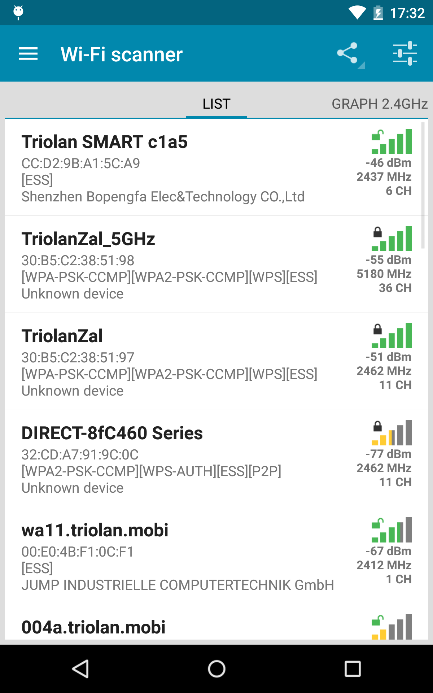
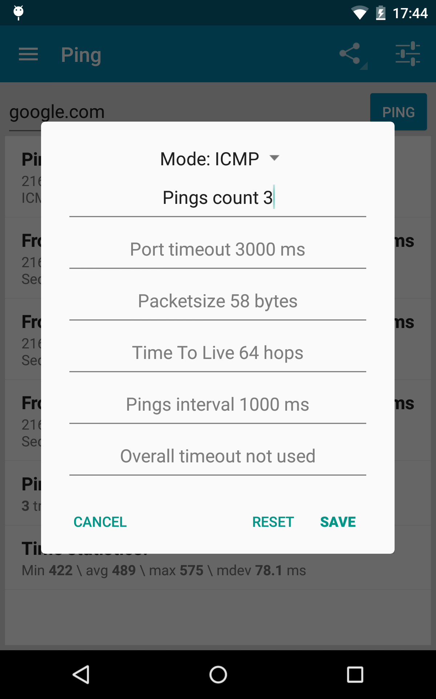

PingTools 深度盘点：口袋里的网络诊断台到底能做多少事
PingTools 把 Ping、Traceroute、iPerf、Wi-Fi 分析十几样网络工具打包进一个安卓 App——它的能力边界在哪，哪些功能是真刚需，什么时候值得掏 Pro 的钱
网络出问题的时候你在想什么？Wi-Fi 信号满格但视频卡成 PPT，办公室某台服务器 Ping 不通但同事说好好的，家里 NAS 从公网访问忽快忽慢——这些场景每个人都遇过，但真正能系统排查的人没几个。PingTools 的官网把这个定位写得很直白：它把一整套网络诊断工具塞进手机，让你蹲在路由器旁边就能完成过去要开电脑跑三四个终端命令的事。这篇盘点不做功能清单的流水账，而是把它的能力域按解决问题的维度重新梳理一遍，帮你判断哪些功能是刚需、哪些是锦上添花。
连通性检测：从 Ping 到 TCP/HTTP 的三层覆盖
PingTools 的第一大能力域就是连通性检测，而且做得比系统自带的 Ping 命令要细得多。它支持三种 Ping 模式：经典的 ICMP Ping、针对端口的 TCP Ping、以及面向 Web 服务的 HTTP Ping。
ICMP 模式就是大家熟悉的 Ping——发出 ICMP Echo Request 包等回应，但 PingTools 让你能调的参数比命令行版本丰富得多。包大小可以从 58 字节一路拉到 1500 字节以上，用来测试路径上的 MTU（最大传输单元）瓶颈；间隔最低 500 ms、超时最高 10 秒，适应从本地局域网到跨国服务器的各种网络环境；次数设成 0 就是无限循环，配合总体超时可以精确控制监控窗口。有经验的运维都会记得，ping -f 洪水攻击和 ping -s 1400 大包测试是排查分片问题的标准套路——现在在手机上也能做了。
TCP Ping 是更实用的模式。ICMP 经常被服务器防火墙屏蔽，但 TCP 连接请求几乎不会。你可以指定任意端口，看它能不能建立 TCP 三次握手。这对排查"服务器 Ping 不通但 Web 服务正常"这类现象特别有用——或者反过来，Ping 通但 TCP 80/443 端口连不上，那大概率是应用层的问题。
HTTP Ping 则把连通性检测再往上推了一层。它直接发 HTTP GET 请求到指定 URL，记录状态码、响应时间、重定向次数。这已经不是在测"网通不通"，而是在测"服务活没活"。我试过用它监控一个 CDN 节点，从不同运营商网络发起请求，一眼就能看出哪个运营商的链路有问题。
三种模式的设置面板是独立保存的——你可以给 ICMP 设好 100ms 间隔、给 TCP 设好 5000ms 超时，互不干扰。想深入了解每个参数的取值区间和适用场景，PingTools文档里有逐参数的对照表。改完点 SAVE 就生效，想回到默认值点 RESET。
Wi-Fi 信号分析：别再只看格数了
很多人判断 Wi-Fi 好不好只看手机顶部状态栏的格数，但格数是给普通用户看的模糊信号。PingTools 的 Info 面板和 Wi-Fi Scanner 把这个信号量化成了 dBm 值——一个负数，越接近 0 越好。-30 到 -50 是优秀，-50 到 -60 是良好，-60 到 -70 就开始卡，-80 以下基本不能用。这个表是经验值，但体感匹配度很高。
更有价值的是实时信号图表。Info 面板里的 Wi-Fi 信号图以秒为单位采样，纵轴向上代表信号好。你站着不动的时候线是平直的；走动的时候缓慢上下波动；突然深跌到 -80 以下是掉线预警；周期性尖峰大概率是附近的微波炉或蓝牙设备在干扰 2.4 GHz 频段。我曾经靠这个图表发现厨房的微波炉一开，客厅的 2.4 GHz Wi-Fi 就出现规律的毛刺——换了 5 GHz 之后彻底消失。

除了信号强度，Info 面板还会显示当前的协商速度——手机和路由器之间物理链路能跑多快，不是实际下载速度。2.4 GHz 单天线通常 150 Mbps 封顶，双天线 300 Mbps；5 GHz 2x2 MU-MIMO 起步就是 867 Mbps，高端 Wi-Fi 6 可达 1200+ Mbps。如果你的协商速度远低于路由器标称，要么是信号差，要么是频段太拥挤——走到近一点的位置试试协商速度能不能上去，就能判断是哪个问题。
Wi-Fi Scanner 还能列出周围所有 Wi-Fi 的信道、信号强度、加密方式——一眼就能看到有没有人跟你家路由器占了同一个信道。信道重叠是家庭 Wi-Fi 慢的头号原因，但大多数人不知道怎么查。
带宽实测：iPerf 客户端终于装进口袋
说到带宽测试，大家第一反应是 Speedtest 之类的 App。但 Speedtest 测的是你到它服务器的带宽，而 iPerf 测的是你指定两端之间的实际吞吐——这是完全不同的东西。比如你想测家里 NAS 和手机之间的局域网带宽，或者想测办公室两条宽带之间的互联速度，Speedtest 帮不上忙，iPerf 才是正解。
PingTools 内置了 iPerf3 客户端和服务器。在电脑上跑 iperf3 -s 开一个服务端，手机这边填服务器 IP 和端口（默认 5201），点 START 就能测出真实的 TCP/UDP 吞吐。它支持 TCP 和 UDP 两种模式，UDP 模式还能指定带宽上限，用来测试丢包率和抖动。

iPerf 不是开箱即用的——两端都要有进程在跑，服务器端要放通 5201 端口，云服务器还要配安全组。连接失败时报错分两种：Connection refused 说明服务器可达但端口没监听（大概率是没开 iPerf Server 或端口不对），Connection timed out 说明根本到不了目标主机（防火墙、NAT、运营商封锁都有可能）。PingTools 的 iPerf 面板把这两种错误的排查思路直接印在界面上了，新手照着一步步来就能定位。
进阶工具：Traceroute、端口扫描、Pro 版解锁
PingTools 还有一堆进阶工具藏在侧边栏里。Traceroute 可以追踪数据包经过的每一跳路由器，帮你定位网络瓶颈在哪一段——是本地宽带、运营商骨干、还是目标服务器那边。端口扫描可以对一个 IP 范围批量探测开放的 TCP 端口，适合快速盘点内网设备。DNS 查询、WHOIS、SSL 证书检测这些工具也都在，偶尔用一下挺方便。
Pro 版解锁的功能主要是高级 Ping 特性和无广告。购买方式是 Google Play 内购，一次性买断，一个账号买了所有设备都能用。国内用户最稳妥的支付方式是淘宝买 Google Play 礼品卡充值。Free 版可以直接从下载拿到，功能已经足够覆盖日常使用，但 Pro 版的高级 Ping 参数和批量任务对频繁做网络诊断的人来说还是值的。
短板也要说
盘点到这里，PingTools 的局限也很明显。首先是 安卓独占——iOS 用户没这个福分，App Store 上同类工具少而且大多阉割。其次是 iPerf 的门槛：两端配合、端口开放、防火墙配置，对非技术用户来说还是有点复杂，不像 Speedtest 那样一键出结果。还有，Pro 版虽然不贵但毕竟要花钱，Free 版的广告不算多但偶尔会跳出来。
最后一个短板是 没有历史记录——每次测试完结果不会自动保存，想对比两次测试的数据得自己截图或手动记。对长期监控某个网络环境的人来说，这是个挺实际的痛点。
什么样的人该用它
第一类是 网管和运维。不管是在机房还是在客户现场，手机掏出来就能 Ping、Traceroute、测带宽，比扛着笔记本跑命令方便太多。三种 Ping 模式 + 可调参数的组合，覆盖了日常排障 80% 的场景。
第二类是 家庭路由器折腾党。换了新路由器想测测信号覆盖、改了信道想看看有没有改善、怀疑邻居占了同信道——PingTools 的 Wi-Fi Scanner 和实时信号图是免费版就能用的，而且比路由器管理页面显示的信息详细得多。
第三类是 移动办公人士。经常出差、住不同酒店、连各种公共 Wi-Fi，用它快速判断当前网络能不能视频会议、能不能访问公司内网——一个 TCP Ping 就能搞定，不用等半天网页加载。
总的来说，PingTools 是那种"平时感觉不到存在，出问题时才发现离不开"的工具。它不是玩具，也不是纯专业软件，而是把网络诊断这件事从"只有懂命令行的人才能做"降到了"装个 App 就能上手"的门槛。如果你曾经因为网络问题蹲在路由器旁边百思不得其解，值得装一个试试看。这款工具的资料在GitHub、Gitee 和 GitCode 都有收录，国内访问后两者更顺畅。